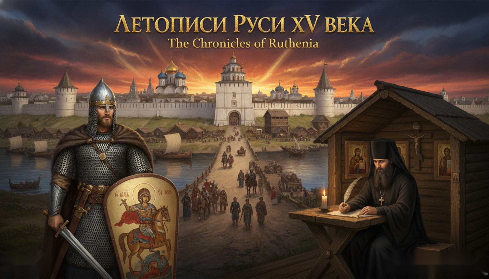

Летописи Руси XV века — The Chronicles of Ruthenia

Симбиоз математики и творчества
«Летописи Руси XV века» — это уникальный проект, где игровой движок Godot (десктопная версия) берёт на себя всю математику: броски кубиков, расчёт урона, шансы попаданий, проверку умений и выживания. А Нейросеть-Нарратор (локальная llama или облачная модель) выступает в роли бесконечно креативного Игрового Мастера, описывая мир, диалоги и последствия действий. Браузерное демо на этой странице написано на Phaser 3.
Но главное — жёсткий историзм. RAG-База Данных, собранная из сотен исторических книг и статей, не позволяет нейросети галлюцинировать и выдумывать факты. Всё, что происходит в игре, проверяется на историческую достоверность.
RAG-База Исторических Данных
Многобазовая система Retrieval-Augmented Generation, наполненная реальными историческими источниками по Руси XV века и мировой истории. Нейросеть не выдумывает — она выбирает из проверенных фактов.
BRP Universal Game Engine d100
Математически выверенная ролевая система Basic Roleplaying. Проработанная, адаптированная под сеттинг Руси XV века, с реалистичными шансами, навыками и боевыми механиками.
LLM-Нарратор
Локальная нейросеть на llama.cpp server или любая облачная модель через OpenAI-совместимый API. Качество повествования зависит от выбранной модели и её «весов».
Реалистичные пошаговые бои
Графический бой в 2.5D изометрии или текстовый режим. Реальное историческое оружие, доспехи и одежда. Возможность умереть от одного удачного удара в уязвимое место.
Живой исторический мир
Все мировые события отражаются в игре: слухи от купцов, новости от иностранных гостей, политические изменения. Смена дня и ночи, времён года, погоды. Реалистичные дороги и расстояния.
Умное управление памятью
Rolling Summary + State Injection вокруг контекстного окна модели. Нет переполнения контекста — нейросеть всегда помнит ключевые события вашей истории.
Хроника 1400–1505
Ключевые события эпохи — от нашествия Едигея до конца правления Ивана III. Сценарий «Поход за утраченной иконой» вплетён в эту летопись: слухи о великих битвах доходят до деревни вместе с торговыми обозами.
Русь XV века — эпоха перемен
Время «Собирания земли русской» вокруг Московского княжества, феодальных войн и сбрасывания Ордынского ига. Три великих князя определяют эпоху.
105 лет эпохи
Выберите князя на ленте — между ними 105 лет эпохи.
В игре учитываются реальные исторические события Руси XV века и всех крупных мировых событий. Слухи от купцов, рассказы иностранных гостей, политические изменения — всё это отражается в игровом мире и его невозможно пропустить.
Исторические карты Руси
Игра опирается на реальные исторические карты Руси XIV–XVI веков: по подлинным картам Московии выверялись география и названия игровой округи.

Карта России Антония Вида и Ивана Лятского
1542–1555 гг.
Первая подробная карта Московского государства, созданная по заказу Сигизмунда II Августа.

Карта России Сигизмунда фон Герберштейна
1550 г.
Карта из книги «Записки о московитских делах» австрийского дипломата Сигизмунда фон Герберштейна.
Basic Roleplaying Universal Game Engine SRD (d100)
Математически выверенная ролевая система BRP (d100). Все броски, урон, навыки и проверки считает движок Godot. Нейросеть только описывает результат.
Степени успеха d100
- Удача — 1/20
- Особый — 1/5
- Успех — ≤ навык
- Провал — > навыка
- Крит.провал — 96+
Области попадания (d20)
- 1–4: Правая нога
- 5–8: Левая нога
- 9–11: Живот
- 12: Грудь
- 13–15: Правая рука
- 16–18: Левая рука
- 19–20: Голова
Бонус урону
- СИЛ+РАЗМ 2–12: −1D6
- СИЛ+РАЗМ 13–16: −1D4
- СИЛ+РАЗМ 17–24: нет
- СИЛ+РАЗМ 25–32: +1D4
- СИЛ+РАЗМ 33–40: +1D6
- СИЛ+РАЗМ 41–56: +2D6
- СИЛ+РАЗМ 57+: +3D6+
Тяжёлая рана (d100)
Урон ≥ ½ HP → таблица d100 с потерей характеристик по зонам тела. Нокаут «взять живым» — пленный даёт выкуп по Судебнику 1497.
Интерактивный бросок d100
Нажми на дайс
Как это работает
🏗️ Архитектура проекта
- Игровой движок Godot — управляет игровым окружением, загрузкой нейросетей, ведёт все расчёты и следит за исторической достоверностью промптов через RAG-базу.
- Локальная нейросеть — загружается с репозитория Hugging Face при первом старте. Работает офлайн через llama.cpp server.
- Облачные модели — подключите любую модель через свой OpenAI-совместимый API-ключ, указав адрес провайдера и название модели.
- RAG-База Данных — собрана из нескольких сотен исторических книг и статей. Проверяет каждый промпт на историчность перед передачей нейросети.
- BRP d100 — ролевая система Chaosium BRP Universal Game Engine SRD. Все броски, урон, навыки и проверки считает движок.
- Встроенная модель для эмбеддинга — mxbai-embed-large-v1 · Q5_K_M · dim 1024 · косинусный поиск. Вторая нейросеть для RAG-базы знаний.
- Rolling Summary + State Injection — интеллектуальное управление контекстным окном модели, предотвращающее переполнение и сохраняющее ключевые события.
- Полный список моделей Нейросетей:
- Локальные: Saiga Llama 3 8B (Q2_K/Q4_K_M/Q8_0), Saiga Gemma 3 12B (Q3_K_M/Q4_K_M/Q6), Vikhr-Nemo 12B (Q4_K_M/Q5_K_M/Q6), Vikhr-YandexGPT 5 Lite 8B (Q4_K_M), Gemma-4 E4B-Uncensored (Q4_K_M)
- Облачные: Возможно подключение любой облачной Нейросети, используя OpenAI-совместимый API-ключ.
- Эмбеддер (база знаний): mxbai-embed-large-v1 · Q5_K_M · dim 1024 · косинусный поиск
Hugging Face
Загрузка выбранной локальной модели нейросети из открытого репозитория при первом запуске.
OpenAI-совместимый API
Подключение любых облачных моделей: OpenAI, Anthropic, Mistral, локальные серверы и другие.
BRP SRD Chaosium
Официальная система Basic Roleplaying — проверенная десятилетиями ролевая механика d100.
20 ключевых особенностей
Симбиоз математики и творчества
Godot считает броски и урон, нейросеть описывает события и ведёт диалоги.
Жёсткий историзм
RAG-база не даёт нейросети выдумывать — только проверенные исторические данные.
Локальная нейросеть
Работает офлайн после загрузки модели с Hugging Face.
Облачные модели
Подключение любых LLM через OpenAI-совместимый API-ключ.
Умное управление памятью
Rolling Summary + State Injection вокруг контекстного окна.
Проверка историчности
На всех этапах: от создания персонажа до действий НИП.
Пошаговые бои
Реальное оружие, доспехи. Смерть от одного удара в уязвимое место.
Визуальные режимы боя
Графический 2.5D изометрия или текстовый режим словесных RPG.
RAG из сотен книг
База данных собрана из нескольких сотен исторических источников.
BRP d100
Ролевая система Basic Roleplaying Universal Game Engine SRD.
Мировые события
Все крупные исторические события отражаются в игровом мире.
Слухи и новости
События приходят через купцов, гостей и другие источники.
Система выживания
Отдых, питание, жажда, прокорм лошадей, болезни, отравления.
Реалистичные дороги
Дальности между городами соответствуют историческим картам.
Смена дня и ночи
Времена года и погода влияют на игровой процесс.
Система репутации
Местная и глобальная репутация, отношения окружающих.
Встроенная справка
Типа «Рупедии» — все исторические вехи мировой и русской истории XV века.
Лог сессии
Полный лог событий, диалогов и боёв. Экспорт в текстовый файл.
Исторические карты
Реалистичные карты Руси XIV–XVI веков и окрестностей.
llama.cpp server
Локальный сервер нейросети с OpenAI-совместимым API по HTTP.
Готовы войти в летопись?
Русь XV века ждёт своего героя. Будете ли вы боярином, воином, купцом или странником — история пишется каждым вашим решением.
Взгляните на мир игры
Короткое промо-видео о «Летописях Руси XV века» — концепция, атмосфера, геймплей.
Скриншоты игры
Девять кадров из браузерной игры — по три в ряд: от главного меню до встречи с вором на лесной реке.


Браузерное демо
Попробуйте боевую систему BRP d100 прямо в браузере! Управляйте путником в деревне Руси XV века, общайтесь с NPC и сразитесь с разбойником.
Браузерное демо написано на движке Phaser 3. Основная игра разрабатывается на Godot Engine.
Игра откроется в отдельном окне. Управление: WASD/стрелки — движение, E — взаимодействие, ESC — выход.
Размер: 1280×720. Рекомендуется полноэкранный режим (F11).
Поддержите проект
Средства пойдут на оборудование для тестирования ИИ, наполнение баз знаний и разработку.